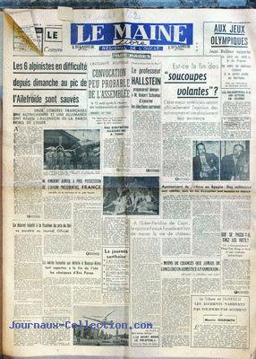

<!--#include virtual="/header.html" -->
<ul>
  <li>
    <figure class="right side">
      <figcaption><em>Le Maine Libre</em> du 31, titrant : <q>Est-ce la fin des soucoupes volantes ?</q></figcaption>
      
    </figure>
    M. H. Siret, surveillant de nuit à <span class="place">Puylaurens (Aude)</span> fait part de ses observations de
    plusieurs objets suspects.
  </li>
</ul>
<!--#include virtual="/footer.html" -->
